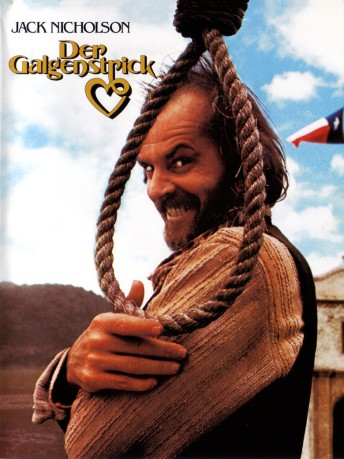

#3382 Der Galgenstrick
Alternativ: Goin' South
 
 IMDB-Wertung: 6.3 / 10
IMDB-Wertung: 6.3 / 10  Metascore: 52
Metascore: 52 
Jack Nicholson spielt in dieser Westernkomödie den “Galgenstrick” Henry Moon. In dieser höchst amüsanten Geschichte wird Nicholson, der bei diesem Film auch Regie führte, von einem jungen Mädchen durch Eheversprechen vor dem Henker gerettet. Mit der launischen Julia Tate (Mary Steenberger) muß er nun in einer mühsamen Partnerschaft leben, in der ihm nichts geschenkt wird, nicht einmal die Freuden des Ehebetts…
Jahr: 1978
Dauer: 104 Minuten
FSK: 12
Land: USA Studio: Paramount PicturesTonspuren: DD2.0 - ,
Untertitel: Englisch,
Auflösung: 720p (1280x720) Größe: 3543 MB
Genre: Komödie, Western
Regisseur:  Jack Nicholson
Jack Nicholson
Drehbuch: John Herman Shaner, Al Ramrus, John Herman Shaner, Al Ramrus, Charles Shyer
Soundtrack: Perry Botkin Jr., Van Dyke Parks
Darsteller:
 Jack Nicholson als Henry Lloyd Moon
Jack Nicholson als Henry Lloyd Moon Mary Steenburgen als Julia Tate Moon
Mary Steenburgen als Julia Tate Moon Christopher Lloyd als Deputy Towfield
Christopher Lloyd als Deputy Towfield- John Belushi als Deputy Hector
 Veronica Cartwright als Hermine, Moon's Old Gang
Veronica Cartwright als Hermine, Moon's Old Gang Richard Bradford als Sheriff Andrew Kyle
Richard Bradford als Sheriff Andrew Kyle Danny DeVito als Hog, Moon's Old Gang
Danny DeVito als Hog, Moon's Old Gang Tracey Walter als Coogan, Moon's Old Gang
Tracey Walter als Coogan, Moon's Old Gang Luana Anders als Lorette Anderson
Luana Anders als Lorette Anderson Lucy Lee Flippin als Diane Haber
Lucy Lee Flippin als Diane Haber Ed Begley Jr. als Whitey Haber
Ed Begley Jr. als Whitey Haber Anne Ramsey als Spinster #2
Anne Ramsey als Spinster #2 Lin Shaye als Parasol Lady
Lin Shaye als Parasol Lady- Dennis Fimple als Hangman
- Jeff Morris als Big Abe, Moon's Old Gang
- Gerald H. Reynolds als Polty, Rail Road Manager
- George W. Smith als Mr. Anderson
- Maureen Byrnes als Mrs. Warren
- B.J. Merholz als Mr. Warren
- Britt Leach als Parson Weems
- Georgia Schmidt als Florence
- Barbara Ann Grimes als Spinster #1
- Marsha Ferri als Spinster #3
- Don McGovern als Norvell the Bartender
- Annie Marshall als Painted Lady
- Anita Terrian als Painted Lady
- Robert Wilson als Drunk
- Carlton Risdon als Cotton the Stage Driver
- Nancy Coan Kaclik als Miriam Standard
- R.L. Armstrong als Farmer Standard
Datei: X:\HD-Western-1960-1979\Galgenstrick, Der (1978, FSK12, 1280x720).mkv seit 30.03.2016
Festplatte: HD Eastern+Western
 Es gibt insgesamt 110 Filme in der Gruppe 'HD-Western-1960-1979'
Es gibt insgesamt 110 Filme in der Gruppe 'HD-Western-1960-1979'